México es un país entre los Estados Unidos y América Central, conocido por las playas en el Pacífico y el golfo de México, y su diverso paisaje de montañas, desiertos y selvas. Las ruinas antiguas, como Teotihuacán y la ciudad maya de Chichén Itzá, se distribuyen por el país, al igual que las ciudades de la época colonial española. En la capital Ciudad de México, las elegantes tiendas, los famosos museos y los restaurantes gourmet son parte de la vida moderna , Si alguna vez has estado por México seguramente hayas escuchado hablar sobre los "Pueblos Mágicos". Si has tenido la oportunidad de visitar algún pueblo mágico de México, posiblemente hayas sentido una atmósfera especial en el aire, en su comida, y en su gente
Dentro de los primeros lugares se ubicaron tanto ciudades coloniales como los encantadores Pueblos Mágicos,sin embargo, el sol y la playa también siguen conquistando los deseos de pasar unos días a la orilla del mar,todos ellos aún cautivan con su propuesta de viaje a las personas dispuestas a empacar su ropa en una maleta y disfrutar de unas vacaciones,en México existen 49 playas y 9 marinas que han obtenido este distintivo;entre ellas destacan algunas de las más populares y visitadas del país, como: Cancún, Playa del Carmen, Los Cabos, Puerto Vallarta y Huatulco
Los 10 destinos turísticos más populares en México
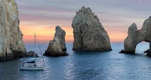
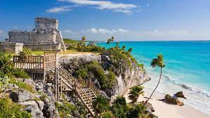
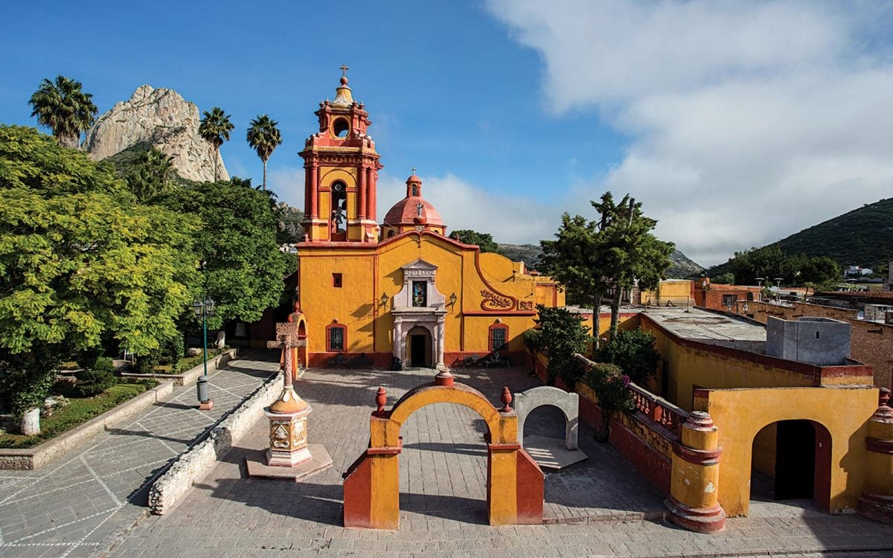
-Destinos mas polulares-
San Miguel Allende, Guanajuato
Tepoztlán, Morelos
Bernal, Querétaro
Valle de Bravo, Estado de México
Cancún, Quintana Roo
Oaxaca, Oaxaca
Tepotzotlán, Estado de México
Tequila jalisco
Malinalco, Estado de México
Mazatlán, Sinaloa
En tanto, sitios coloniales como San Miguel de Allende y Oaxaca continúan despertando el deseo de los viajeros por admirar su impresionante arquitectura, recorrer sus calles empredradas, así como disfrutar de una propuesta gastronómica única,Hay 121 Pueblos Mágicos en todo el país y el 5 de octubre fue declarado el Día Nacional de los Pueblos Mágicos ,no todos son tan mágicos, pero la mayoría tiene encantos particulares que ofrecerle a los viajeros,asi que agarra las maletas, ponle gasolina al coche y lánzate a explorar estos Pueblos Mágicos cerca de CDMX que seleccionamos por ser, bonitos, accesibles y baratos. ¡Buen viaje!
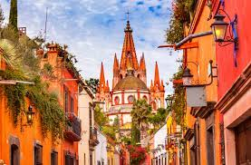
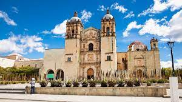
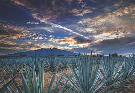
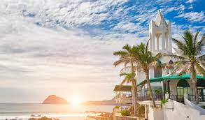
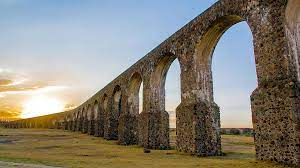
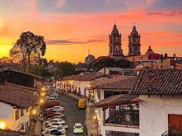
Un Pueblo Mágico es un sitio con símbolos y leyendas, poblados con historia que en muchos casos han sido escenario de hechos trascendentes para nuestro país son lugares que muestran la identidad nacional en cada uno de sus rincones, con una magia que emana de sus atractivos; contribuye a revalorar a un conjunto de poblaciones del país que siempre han estado en el imaginario colectivo de la nación en su conjunto y que representan alternativas frescas y diferentes para los visitantes nacionales y extranjeros por si no lo sabías, desde el año 2001, la Secretaría de Turismo y otras instancias gubernamentales de México, ponen en marcha el programa turístico Pueblos Mágicos de México, con la intención de promover la belleza que tiene el país en toda su extensión.
Los elegidos son sitios con atributos simbólicos, leyendas, hechos trascendentes para la historia del país y demás manifestaciones socioculturales que merecen ser reconocidas y revalorizadas.
Hoy la lista de Pueblos Mágicos en México está conformada por 177 localidades, que cumplieron favorablemente los requisitos para obtener la certificación como tal.
Con esta pequeña reseña, ya colaboramos con tu agenda de viajes, tienes 177 hermosos destinos para visitar; pero aquí va una ayudita más, te contamos cuáles son los pueblos mágicos más visitados…
 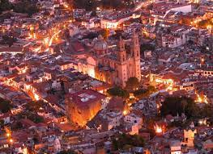
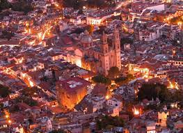